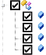
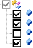
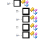

There are four types of receiver parameters which are used in the Export or Import procedure:
| 1. | Receiver parameters always are in the Export or Import lists: |
These parameters are included in the Export or Import lists by default. The parent check box is always black, when all parameters of the node are ready to export / import:
|
 |
You can exclude any parameter for export / import, by unselecting the respective check box.
| 2. | Receiver parameters are not included in the Export list by default: |
The login / user name /password for: Wi-Fi, TCP, HTTP, FTP, NTRIP, PPP, Notifications nodes are not included in the default set of the receiver parameters for export.
|
 |
The parent check box is gray, if one or more child check boxes are not selected:
You can select any parameter for export, by selecting the respective check box.
| 3. | Receiver parameters are not included in the Import list by default: |
| • | all ports (Serial, Modem, USB, TCP, Bluetooth, Ntrip, MVP) parameters, |
| • | IP addresses for Ethernet and Wi-FI, |
| • | the status (enable of disable) of the TCP Client, NTRIP Server2 / NTRIP Server3, Caster, RINEX conversion and Message Sets. |
The parent check box is white, if all child check boxes are not selected:
|
 |
You can select any parameter for import, by selecting the necessary check box.
| 4. | Receiver parameters are included in the Export list by default, but are not included in the Import list: |
| • | Bluetooth device address ; |
| • | Bluetooth Long Link device address; |
| • | Network Ethernet MAC address; |
| • | Wi-Fi MAC address. |